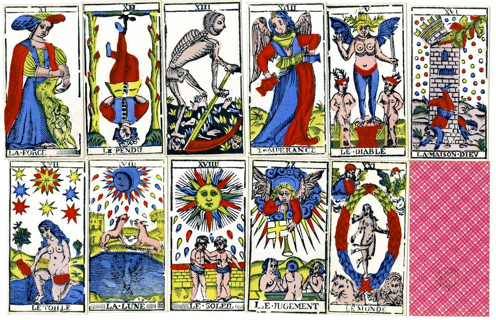
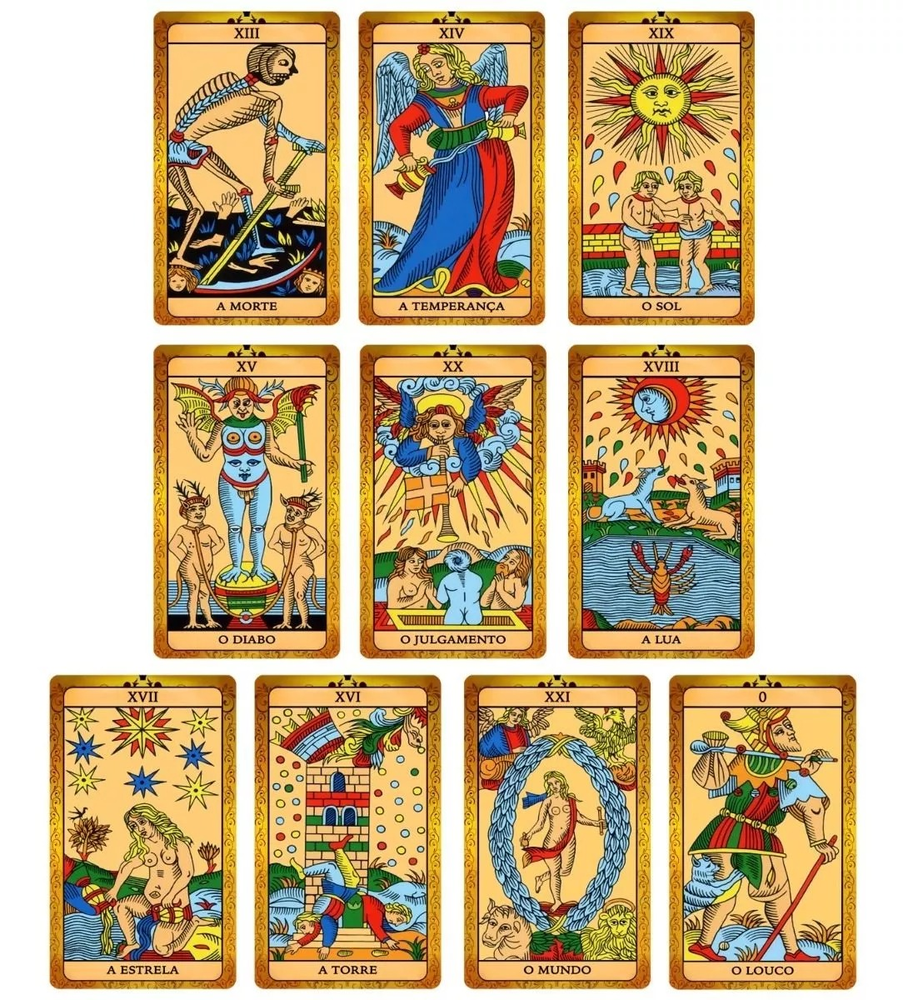

Nesta pagina, vamos aprender sobre o tarot. História, Estrutura e Significados

A história do Tarot
Por: Andrieli Engster
As primeiras versões conhecidas das cartas de Tarot surgiram na Europa durante o século XV, especialmente na Itália. Inicialmente, esses baralhos estavam relacionados a jogos de cartas, e não exclusivamente à adivinhação.
Com o passar dos séculos, o Tarot passou a ser associado ao ocultismo, à astrologia, à alquimia e a outras tradições esotéricas. A partir do século XVIII, estudiosos e ocultistas começaram a atribuir significados simbólicos e espirituais às cartas.
Atualmente, existem diversos estilos de Tarot. Um dos mais conhecidos é o Tarot de Rider-Waite-Smith, publicado no início do século XX, que influenciou muitos dos baralhos modernos.

Estrutura do Tarot
Por: Andrieli Engster
O Tarot tradicional possui 78 cartas:
22 Arcanos Maiores
56 Arcanos Menores
Os Arcanos Maiores geralmente representam temas importantes, arquétipos, transformações e acontecimentos marcantes. Já os Arcanos Menores costumam abordar situações mais cotidianas.
Os 22 Arcanos Maiores
0 — O Louco
Representa liberdade, espontaneidade, novos começos e aventura. Pode indicar alguém disposto a explorar o desconhecido, mas também pode alertar para impulsividade ou falta de planejamento.
I — O Mago
Está associado à iniciativa, criatividade, habilidade e capacidade de transformar ideias em ações. É uma carta relacionada ao potencial e à utilização dos próprios recursos.
II — A Sacerdotisa
Representa intuição, mistério, conhecimento interior e aquilo que ainda não foi revelado. Pode sugerir a necessidade de observar e ouvir a própria intuição.
III — A Imperatriz
Relaciona-se à criatividade, fertilidade, crescimento, cuidado e abundância. É frequentemente associada à criação e ao desenvolvimento de projetos e relacionamentos.
IV — O Imperador
Representa estrutura, autoridade, estabilidade, organização e liderança. Pode indicar a necessidade de estabelecer limites e assumir responsabilidades.
V — O Hierofante
Está relacionado à tradição, ensinamentos, valores, instituições e orientação espiritual. Pode simbolizar aprendizado através de uma tradição ou de um mentor.
VI — Os Enamorados
Representam relacionamentos, escolhas, união e valores pessoais. A carta também pode indicar uma decisão importante que exige alinhamento entre coração e razão.
VII — O Carro
Simboliza determinação, movimento, conquista e controle da própria direção. Pode representar avanço após a definição de um objetivo.
VIII — A Justiça
Está relacionada ao equilíbrio, responsabilidade, verdade e consequências das escolhas. Pode indicar a necessidade de analisar uma situação de maneira racional e imparcial.
IX — O Eremita
Representa introspecção, solitude, busca por conhecimento e sabedoria. Pode indicar um período de reflexão antes de tomar uma decisão.
X — A Roda da Fortuna
Simboliza mudanças, ciclos e acontecimentos que podem estar fora do controle individual. Lembra que situações podem se transformar e que nenhum ciclo permanece igual para sempre.
XI — A Força
Representa coragem, autocontrole, paciência e domínio das emoções. Sua força é mais relacionada à confiança e à serenidade do que à agressividade.
XII — O Enforcado
Pode representar pausa, espera, sacrifício e mudança de perspectiva. Muitas vezes sugere que é necessário olhar uma situação de outra maneira.
XIII — A Morte
Apesar do nome, normalmente não representa literalmente a morte. Simboliza encerramento, transformação, desapego e início de uma nova fase.
XIV — A Temperança
Representa equilíbrio, harmonia, paciência e integração. É uma carta associada à moderação e à capacidade de encontrar um ponto de equilíbrio.
XV — O Diabo
Pode simbolizar desejos, apegos, tentações, dependências e padrões que limitam a liberdade. Também pode representar a necessidade de reconhecer aquilo que exerce poder sobre nós.
XVI — A Torre
Representa rupturas, revelações e mudanças inesperadas. Pode indicar a queda de estruturas que já não conseguem se sustentar.
XVII — A Estrela
É associada à esperança, inspiração, renovação e confiança no futuro. Pode representar um período de recuperação e clareza depois de dificuldades.
XVIII — A Lua
Relaciona-se ao inconsciente, sonhos, emoções, ilusões e incertezas. Pode indicar que nem tudo está claro e que é importante evitar conclusões precipitadas.
XIX — O Sol
Representa alegria, clareza, vitalidade, sucesso e confiança. É geralmente considerada uma carta de energia positiva e revelação.
XX — O Julgamento
Simboliza despertar, avaliação, renovação e decisões importantes. Pode indicar um momento de compreender experiências passadas e iniciar uma nova etapa.
XXI — O Mundo
Representa conclusão, realização, integração e encerramento de um ciclo. Pode simbolizar a sensação de ter alcançado uma etapa importante.
Os Arcanos Menores
Os 56 Arcanos Menores são divididos em quatro naipes:
Paus: associados à ação, criatividade, energia e iniciativa.
Copas: relacionados às emoções, sentimentos, relacionamentos e afetos.
Espadas: associados aos pensamentos, decisões, conflitos e comunicação.
Ouros: relacionados ao trabalho, recursos materiais, segurança e vida prática.
Cada naipe possui cartas numeradas de Ás a 10, além de quatro cartas da corte: Pajem, Cavaleiro, Rainha e Rei.
Como fazer uma leitura de Tarot
Uma leitura pode começar com uma pergunta clara. Em vez de perguntar apenas "O que vai acontecer?", perguntas abertas podem favorecer uma reflexão mais profunda, como:
"O que preciso compreender sobre esta situação?"
"Quais fatores estão influenciando minha decisão?"
"O que posso fazer para lidar melhor com este desafio?"
"Que aspecto de mim mesmo preciso observar?"
Depois da pergunta, as cartas são embaralhadas e algumas são escolhidas. A posição de cada carta dentro da tiragem também pode possuir um significado específico.
Uma tiragem simples de três cartas
Uma das formas mais fáceis de começar é utilizar três cartas:
Carta 1 — Passado: representa influências ou acontecimentos anteriores.
Carta 2 — Presente: representa a situação atual e seus principais aspectos.
Carta 3 — Futuro ou tendência: representa possíveis desenvolvimentos da situação.
É importante compreender que uma leitura de Tarot é uma interpretação simbólica. As cartas não precisam ser encaradas como uma previsão inevitável do futuro.
Cartas invertidas
Algumas pessoas utilizam cartas invertidas, ou seja, cartas que aparecem de cabeça para baixo durante a leitura.
Uma carta invertida pode representar uma energia bloqueada, interna, exagerada ou diferente da interpretação tradicional. Porém, não é obrigatório utilizar cartas invertidas. Cada leitor pode escolher o método que considera mais adequado.
Tarot como ferramenta de reflexão
O Tarot pode ser utilizado de diferentes maneiras. Para algumas pessoas, possui um caráter espiritual ou religioso; para outras, funciona como uma ferramenta de autoconhecimento, reflexão e exploração simbólica.
Independentemente da abordagem, é importante evitar tratar uma interpretação como uma certeza absoluta. Questões importantes relacionadas à saúde, dinheiro, segurança ou decisões legais devem ser avaliadas com informações concretas e, quando necessário, com profissionais qualificados.
Conclusão
O Tarot possui uma história extensa e uma rica linguagem simbólica. Suas 78 cartas apresentam personagens, situações e imagens que podem ser interpretadas de inúmeras maneiras.
Aprender Tarot envolve conhecer os significados tradicionais das cartas, mas também desenvolver a capacidade de observar símbolos, compreender contextos e relacionar diferentes cartas dentro de uma leitura.
Mais do que tentar descobrir um futuro imutável, o Tarot pode ser utilizado como uma forma de fazer perguntas, explorar possibilidades e refletir sobre as escolhas que fazemos no presente.